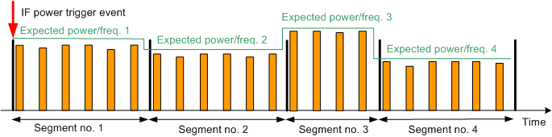
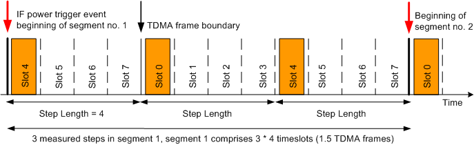
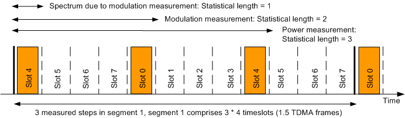
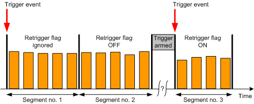

Each segment contains an integer number of timeslots and is measured at constant analyzer settings (i.e. at constant expected nominal power and RF frequency). The figure below shows a series of four segments with different lengths. Orange bars depict measured timeslots.

The standard application of the GSM list mode is to measure a range of equidistant timeslots separated by gaps. The distance between 2 measured timeslots (step length) can vary between 1 and 8 timeslots (1 TDMA frame). The relationship between the step length, measured steps per segment and segment length are shown below. The figure shows four measured, active slots (orange). The remaining slots can be active or inactive; they are not measured. With a step length of 4 slots, segment no. 1 contains 3 measured steps and has a duration of 12 timeslots (1.5 TDMA frames).

An "evaluation offset" excludes an integer number of timeslots at the beginning of each segment from the measurement.
In list mode, the R&S CMW can measure all power, modulation, spectrum due to modulation and spectrum due to switching results. It is possible to enable or disable the measured quantities individually for each segment. Moreover, it is possible to define a statistical length for the calculation of average, minimum and maximum results.

The R&S CMW supports up to 24000 captured GSM timeslots. Thus with a step length of 1 up to 24000 steps can be measured, while with a step length of 8, up to 3000 steps can be measured. A segment can contain up to 3000 steps, of which up to 1000 steps can be measured (maximum statistical length, for some results up to 100 steps).
Each 26th frame of a GSM uplink signal is an idle frame and causes a "signal low" error. It can be configured, whether this signal low error is ignored or indicated, e.g. via the reliability indicator and the return code. Both indicators are returned when measurement results are queried.
- "Do not Ignore Idle Frames": The reliability indicator and the return code indicate signal low when an idle frame is measured.
- "Ignore Idle Frames": A certain number of signal low errors is ignored and not indicated via reliability indicator and return code. How many signal low errors are ignored, depends on the number of measured frames and the number of slots measured per frame.
Example: If three slots are measured per frame, the first three signal low errors of each measured 26 frames are ignored. If a fourth (fifth, sixth, ...) signal low error occurs within the 26 frames, it is indicated.
A list mode measurement can either be triggered only once, or it can be retriggered at the beginning of specified segments.
In "Once" mode, a trigger event is only required to start the measurement. As a result the entire range of segments (up to 512) is measured without additional trigger event. The trigger is rearmed after the measurement has been finished. Specified retrigger flags are ignored.
The "Once" mode is recommended for UL signals with accurate timing over the entire range of segments.
In "Segment" mode, the retrigger flag of each segment is evaluated. It defines whether the measurement waits for a trigger event before measuring the segment, or not. Retriggering the measurement is recommended if the timing of the first timeslot of a segment is inaccurate, e.g. because of signal reconfiguration at the UE. Furthermore retriggering from time to time can compensate for a possible time drift of the UE. The retrigger flag of the first segment of the measurement is always ignored (implicitly set to ON).
In the example shown below, the "Segment" trigger mode is enabled. The retrigger flag is OFF for the second segment and ON for the third segment. Thus the measurement stops when the first and second segments have been captured and waits for a trigger event before capturing the third segment.

Segment configuration and measurement are independent from each other. To perform a sequence of measurements at maximum speed, proceed as follows:
Configure all segments ever needed.
The R&S CMW supports a range of up to 2000 configured segments.
Select up to 512 consecutive segments within the configured segment range.
Measure the selected segments.
Repeat steps 2 and 3 as often as needed.
The list mode is essentially a single-shot remote control application; an application example is reported in section "Using GSM List Mode". The essential remote control commands are listed below.
Parameters | SCPI commands |
|---|---|
Activate / deactivate list mode | |
Range of measured segments | |
Segment configuration (steps per segment, power, frequency, ...) | |
Statistical length | |
Step length | |
Ignore idle frames or not | |
Trigger mode | |
R&S CMWS connector | |
Retrieve results | FETCh:GSM:MEAS<i>:MEValuation:LIST:SEGMent<no>:... FETCh:GSM:MEAS<i>:MEValuation:LIST:... See: The segment number <no> for configure commands is an absolute number (1..2000). The segment number <no> for result retrieval is a relative number within the range of measured segments (1 to 512). Example: Segment 1 to 100 configured. Segment 50 to 59 measured. For result retrieval <no> = 1 refers to segment 50, <no> = 10 to segment 59. |
Global and list mode parameters The RF settings (expected power, RF frequency) and most of the measurement control settings (step length, steps per segment, averaging lengths, enable/disable results) are special list mode settings. The R&S CMW ignores the corresponding multi-evaluation parameters. All other settings are taken from the multi-evaluation measurement, e.g.:
|